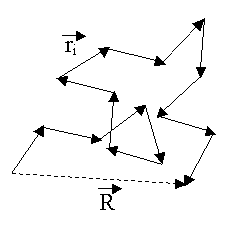
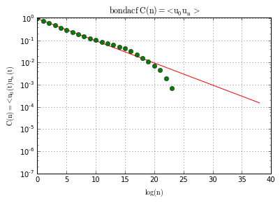

What do we want to calculate?
Bond correlation function:
\begin{equation*}
C(i) = < u_0(t) u_i(t) >
\end{equation*}
average by time, by residues
This function shows correlation between the first segment in the chain and the rest of the chain. After averaging by time and residues we will be able to obtain such parameters as persistance length and etc. At first the correlation will decay exponentially, i.e in y-log scale it will be linear. Then the x-coordinate of the point when the behaviour will stop being exponential(linear in ylog scale) will correpospond to the persistence length(of course we need to multiply n by $l_0$ which is the bond length). Other algorithms can be found in \href{https://github.com/bazilevs31/polymer_simulation/blob/master/CreateMelt/AnalyzeChain.py}. Calculation:
Algorithm:
import numpy as np
from MDAnalysis import *
from read_parameters import read_traj_vmd
import os
import matplotlib.pyplot as plt
from pylab import polyfit
from IPython.display import Image
- Get bonds vectors
- Calculate Bond Correlation Function
- Plot the results
- Do linear fitting of the first few points and extrapolate the linear plot
- Find the linear curve will start being different than our plot -> it will be the persistance length.
def get_bondlist_coords(u):
"""
input: Universe
output: bonds (that are in the domain, normalized)
generate normalized coordinates of bond vectors
get universe , return bonds(coordinates)
generate coor of all bonds(bond = chord i-1 - i+1 ), normalize it
"""
bonds = u.bonds.atom2.positions - u.bonds.atom1.positions
bonds /= np.sqrt((bonds*bonds).sum(axis=1))[:,None]
return bonds
def save_plot_bondacf(n_array, C_array,name):
"""
saves a frame of C(n) BondACF
"""
plt.ylabel(r'$\mathrm{C(n) = <u_0(t) u_n(t)}$')
plt.xlabel(r'$\mathrm{log(n)}$')
plt.grid(True)
plt.yscale('log')
plt.ylim(-0.1,1.1)
plt.title(r'$\mathrm{%s\ C(n) = <u_0 u_n >} } $' % ( name) )
#fitting the first part, experimental
xfirst = n_array[:10]
m,b = polyfit(xfirst,np.log(C_array[:10]),1)
# plt.plot(n_array,C_array,'go',,'r-')
plt.plot(n_array,np.exp(m*n_array+b),'r-')
plt.plot(n_array,C_array,'go')
plt.savefig('BondACF%s.pdf' % (name))
return None
def calc_bondacf():
"""calculates bond acf"""
psffile = "poly.psf"
traj = "traj.dcd"
u = Universe(psffile, traj)
Nbonds = len(u.residues[0])-1
Nres = len(u.residues)
print "Nres = %r" % Nres
print "Nbonds = %r" % Nbonds
bonds = np.array((Nbonds,3))
C = np.zeros(Nbonds)
k = 0
for ts in u.trajectory[0:-1:1]:
print "time = %r" % ts.frame
for res in u.residues:
bonds = get_bondlist_coords(res)
k+=1
for ui in range(0,Nbonds):
C[ui] += np.dot(bonds[0],bonds[ui])
C /= float(k)
ui_array = np.arange(Nbonds)
save_plot_bondacf(ui_array,C,"bondacf")
return None
Results:
calc_bondacf()
Nres = 300 Nbonds = 39 time = 1 time = 2 ... time = 101
As we can see at $n=11$ our green dots start being different than the red curve(the fitting curve), therefore the persistance length : $l_p = n*l_0 = 11*1.3 A$.
comments powered by Disqus